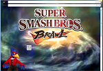

eMail Stationery
Preview Screenshots
Where to see more stationery
On the Stationery Page you can find Stationery to see. There are many Stationery themes to see. Have a look and find out what you can find on the Stationery Page. You have nothing to lose but only to gain, there are some coming out as soon as I figure out what other themes I can make. they should be on that page where ou can see more of the them so check back at the Stationery page and you should see at least one more added to the list of themes i've made so far.